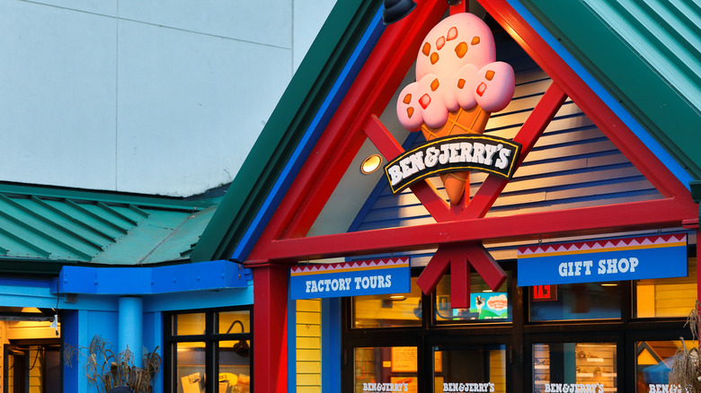

Ben & Jerry's
Information
Ben & Jerry's is a global brand who's home is Waterbury, Vermont; just 15 minutes from Stowe! Here you can visit the factory where their favorite ice cream is made and even get a delicious sample.
If you aren't touring, you can visit one of the windows outside to the right of the entrance and order from,all our current flavors. There's a playground for the kids and you can even visit the Flavor Graveyard where all of their past flavors reside with a grave informing you when the flavor was available.
Type of Food: Ice Cream
Hours:
Tuesday to Saturday - 10am to 6pm
Sunday and Monday - Closed
Phone: (802) 337-1201
Website: Ben & Jerry's